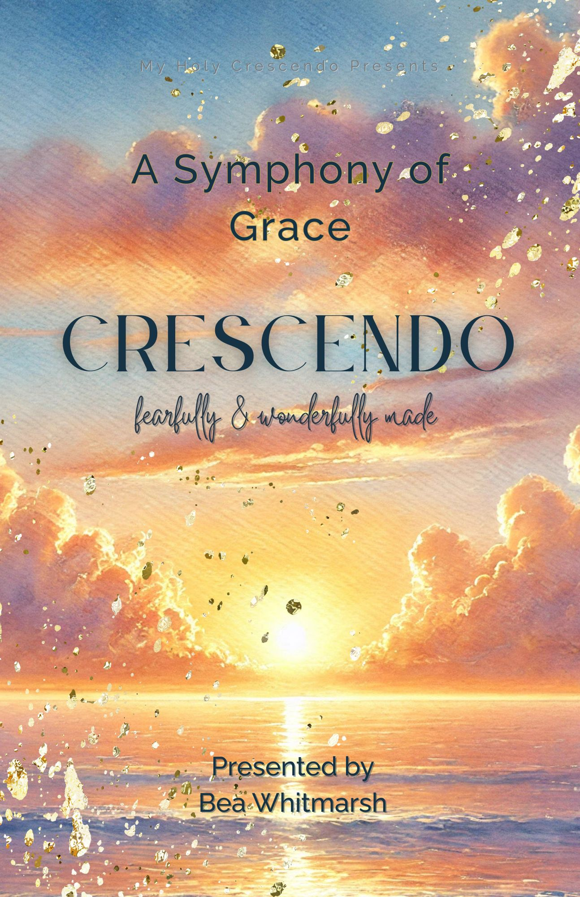

My Holy Crescendo's Signature Program
A 15-Week Journey Through Body, Mind & Spirit
Discover the masterpiece you were created to be. This immersive journey invites you to behold your God-given design through beauty, mercy, and grace—guided by Scripture, enriched by the wisdom of saints, and animated by the love of Christ.
The Journey
A Symphony of Grace is not a quick fix or a set of techniques. It's a pilgrimage—a gradual unfolding of God's love for you, manifested in the unique beauty of your body, mind, and spirit.

Beautiful, full-color guide with weekly reflections, exercises, and Scripture study
Intimate groups of 8-12 women for authentic sharing and lasting friendships
Music that awakens the heart to wonder and deepens your contemplative practice
Learn from holy women throughout history who reveal love made visible
Each week features a flower with theological significance, building your personal garden
Every lesson rooted in God's Word, especially Psalm 139—fearfully & wonderfully made
Four Movements
Like movements in a symphony, each module builds upon the last, creating a complete composition of grace, beauty, and self-understanding.
Weeks 1-3 · Rooted in Christ
Before we can explore the beauty of our design, we must first establish our identity in Christ. This foundational module roots us in God's love and prepares our hearts for the journey ahead.
"Before I formed you in the womb I knew you, before you were born I set you apart." — Jeremiah 1:5
Weeks 4-6 · Embodied Beauty
Your body is not a project to be perfected but a gift to be received with gratitude. This module helps you discover the unique beauty God placed in your physical design.
"Your body is a temple of the Holy Spirit." — 1 Corinthians 6:19
Weeks 7-10 · Interior Landscape
Understanding how God wired your mind and emotions is essential for spiritual growth. This module illuminates your interior life and helps you recognize your unique patterns.
"Be transformed by the renewal of your mind." — Romans 12:2
Weeks 11-15 · Living Your Calling
Now that you know who you are in body, mind, and spirit, how do you live it out? This final module helps you craft a life of meaning, purpose, and joy in Christ.
"Whatever you do, do it all for the glory of God." — 1 Corinthians 10:31
Everything You Need
Over 200 pages of reflections, exercises, and beautiful design
Music curated for each week's theme
Guided discussions and shared wisdom with your cohort
Access to online group for prayer requests and support
Learn from holy women throughout Church history
15 flowers with theological significance, yours to keep
VIA Strengths, Four Temperaments, 16 Personality Types and more—all included
Color analysis, Kibbe, and Kitchener materials provided
Return to the materials whenever you need them
Ready to Begin?
The next cohort begins the week of May 17, 2026. Small groups fill quickly—reserve your place today to embark on this 15-week journey of discovering the masterpiece God created you to be.
Not sure if this is right for you? Try our free 3-day Prelude to experience a taste of the journey.
Get in Touch
Have questions about A Symphony of Grace? Ready to join the next cohort? I'd love to hear from you.
You can also reach me at:
Email: myholycrescendo@gmail.com
I typically respond within 24-48 hours. Looking forward to connecting with you!